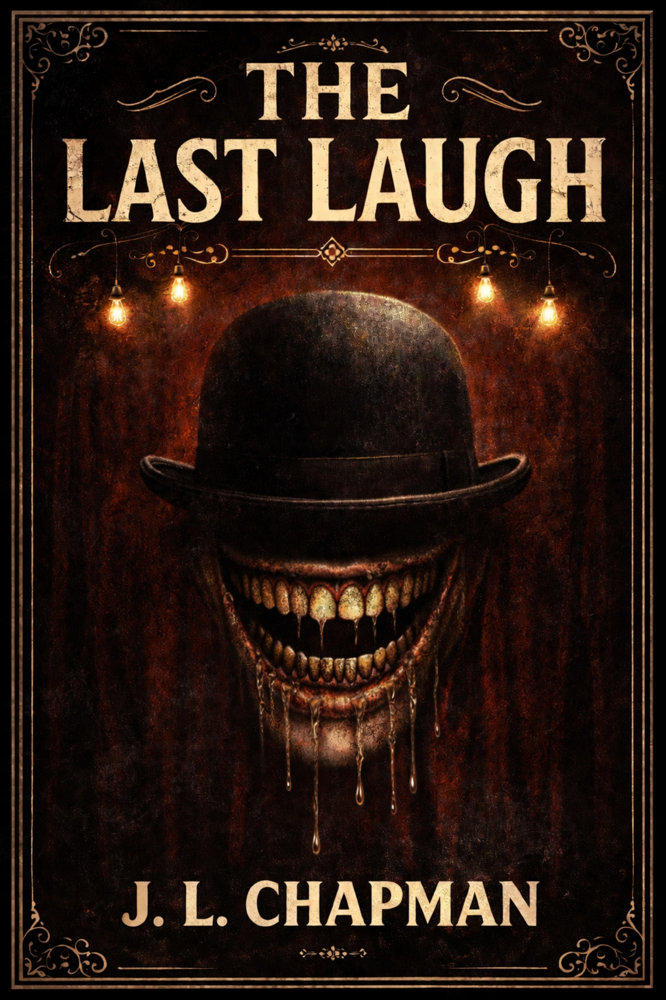
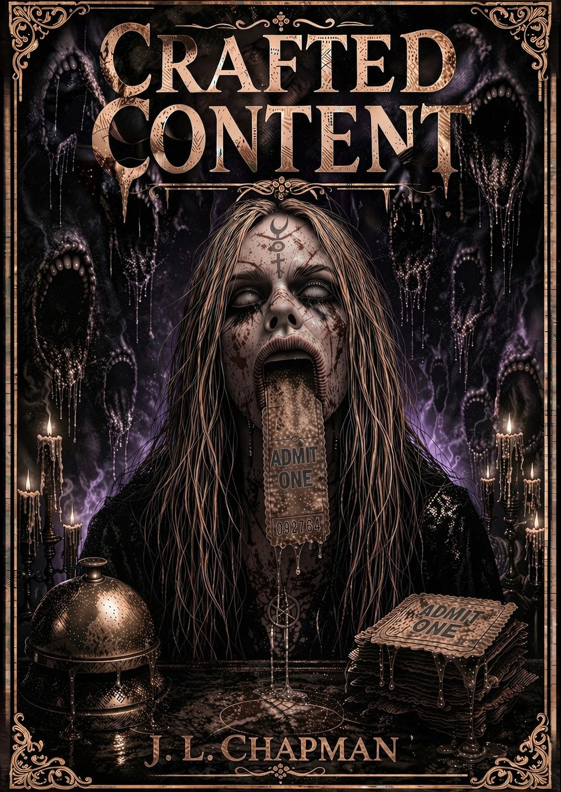

Available Now
The Last Laugh
A comedy festival at an old haunted theater turns into a night of secrets, shame, and judgment as something in the dark begins peeling people open.
Buy on AmazonDark Psychological Horror
J.L. Chapman writes horror soaked in dread, regret, supernatural terror, and the ugly truths people try to bury until the dark starts digging.
Books
Psychological horror, supernatural punishment, and stories where the past does not stay polite.

Available Now
A comedy festival at an old haunted theater turns into a night of secrets, shame, and judgment as something in the dark begins peeling people open.
Buy on Amazon
Available Now
A gaming livestream crew enters Dead Man Theater chasing content, attention, and fame. The theater has other plans, and the audience may be part of the trap.
Buy on AmazonAbout the Author
J.L. Chapman writes horror and psychological thrillers set in real-world places, filled with real people making one wrong turn, then another, until the story stops asking what is scary and starts asking what someone is willing to do.
Chapman’s background includes time as a correctional officer and work in the pharmacy field, places where you learn how fast a person can break and how cleanly a lie can sound. The fiction pulls from that: pressure that keeps tightening, fear that stays quiet, and consequences that do not negotiate.
When Chapman is not writing, carpentry and furniture restoration keep the hands busy, taking apart things that look fine until you get close enough to see what time did to them. Same instinct on the page. Strip it down. Find the decay. Put it back together with the cracks still showing.
These are stories where the exit sign flickers, the room gets smaller, and the ending does not care what anyone meant to do.
Signature Ingredients
Coming Next
J.L. Chapman is currently developing new horror stories, including the next Dead Man Theater Presents novel and standalone nightmares built around dread, pressure, and consequences that do not forgive.
In Development
A Dead Man Theater Presents novel. After the theater’s horrors refuse to stay buried, the masks, the audience, and the sins left behind begin spreading into the world.
In Development
A surreal psychological horror story about fear, control, and the sickening feeling of being watched by something that understands exactly how to take a person apart.
In Development
A workplace nightmare set inside a corporate fulfillment facility, where survival, exhaustion, and economic desperation collide with something inhuman hunting after dark.
In Development
A psychological horror story set on a remote farm, where strange clues, buried violence, and a smiling mascot force a man to confront a massacre that feels far too personal.
Contact
Follow J.L. Chapman for book updates, release news, horror projects, and whatever crawls out next.